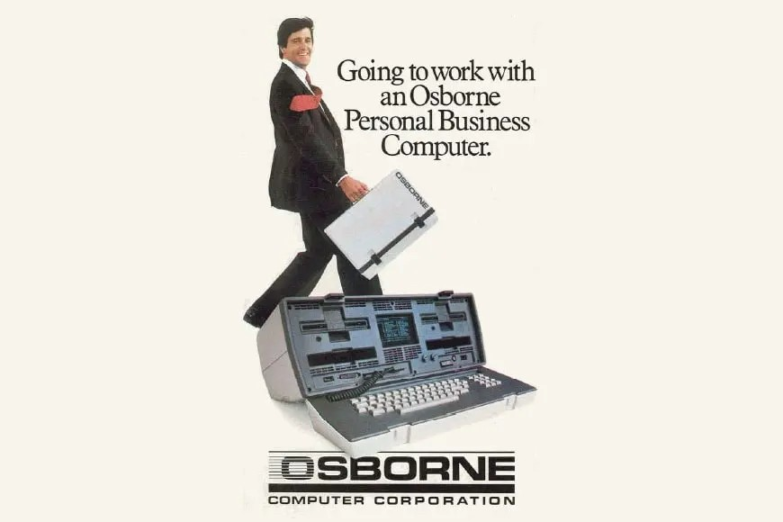
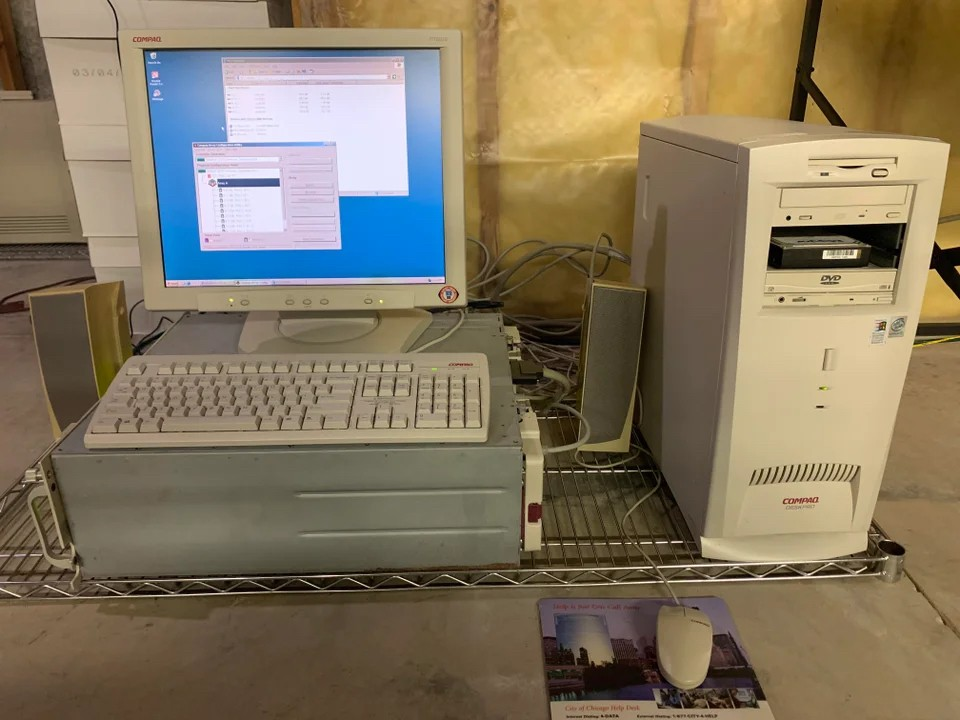

Raquel Dinah Rosenbaum
In the 1970s, it was unheard of for a young girl to fly an airplane or program a computer, but my Father was so far ahead of his time. He was determined to teach all the women in his life how to fly, how to drive a tractor, how to pull a trailer with a (standard transmission!) truck, how to make minor repairs or maintain a car, how to program a computer, many things to which most women had little or no exposure.

Tape Drive Computer Similar to What My Father Had in his Office (an example photo from the internet)
My father was an electronic engineer, and my first experience with programming was learning FORTRAN from him on his tape drive computer, when I was 12. Later on he was a retailer of Osborne computers, one of the first portable computers, and later he was one of the first retailers of the original Apple Macintosh (I'll bet he's wishing he kept a few around all these 40 years to sell now :-).

Original Apple Macintosh Computer in 1984 - The First Computer With a Mouse
Cessna 185 (an example photo from the internet, not the actual airplane)
When I was 13 years old in 1978, my Father taught me how to fly, and by 14, I was flying by instrument flight rules (IFR). Our longest trip in his airplanes was round-trip from Los Angeles to Fairbanks, Alaska in a Cessna 185 like the one pictured above, and I did a lot of the flying and navigation during this and other trips. There was no tablet computer to use for nav, of course. We had a huge duffel just for the 40 pounds of Jeppesen binders with all the ILS maps we'd need on our trip.
The scenery from above Canada and Alaska was something out of this world, I didn't see anything of such a magnanimous scale again until I sailed the Northwest Passage.
It was an incredible experience!

What my Osborne Computer Looked Like - The End of the "Suitcase" Opened Out as a Keyboard (an example photo from the internet)
I was one of the first high school kids to take notes in class with a computer (I used the Osborne, pictured above). I used dbase II, SuperCalc, and Wordstar, and of course its operating system which we still use today on windows computers, the command prompt of MSDOS.
An avid reader of software manuals, I was able to solve the problems that people had in learning how to accomplish things with these new tools. As a result, my first jobs in my early twenties were in software sales and database administration.

What My Windows Tower Computer Looked Like (an example photo from the internet)
When I first made Aliyah to Israel in 2004, I brought a Windows tower computer with me, but didn't realize that support for software problems is regional. Interactions with the internet frequently caused problems, but there was no help available because I wasn't in the region where I bought it, so I bought the four inch thick, "big book" on Windows, published in hardback by Microsoft each year. I read them cover to cover, and was able to solve the problems that I encountered. It was tough, but I learned a tremendous amount about operating systems and networks from this experience!
The technological experiences in my young life, in addition to my mastery of technical graduate level courses in Geographic Information Systems, and many programming courses and certifications I've taken online in the years since, have all prepared me to play a significant role in tech, here in Israel. Thank you so much, Dad, you made sure I grew up with technology and the skills important for success in life!
Outline of My Life with Technology (includes more technologies I learned than mentioned above)
- My Teen Years
- Began learning Fortran on tape drive computer
- Began learning how to fly an airplane
- Began learning how to fly inside clouds (IFR - flying on instruments)
- Was one of first people to take class notes in high school classes with portable computer
- First Jobs
- Read manuals cover to cover to get jobs in software sales and database administration
- Aliyah to Israel
- Gained Experience with Operating Systems by reading "The Big Book" for MS Windows every year and solving problems (RegEdit, Connectivity, Hebrew Entry in WebForms)
- Masters Program Coursework
- Began learning Python, SQL, R, ArcGIS, GeoLocation, and Adobe Illustrator in Masters program in Geography
- Work Abroad for 10 Years
- Gained experience with Software Development Life Cycle (SDLC)
- Learned how to explain technological concepts about feature development for non-technical executive audiences
- Gained experience with Sharepoint, all MS Office modules
- Gained experience with design and improvement of in-store survelliance video setup
- Got a pilot's license for small drones, did aerial photography with my DJI I2
- Took 30,000 photos with Sony A7, wide angle and zoom
- Return Back Home to Israel
- Continued learning Python, SQL, R, Excel for Developers, Adobe Modules, Tableau, ChatGPT, and certificates in Data Analysis, all in online courses
- Completed IBM Certification in CyberSecurity
- The following is my LinkedIn Profile:
“The people which can know the full darkness of history and yet rejoice is a people whose spirit no power on earth can ever break.” --Rabbi Jonathan Sacks
Flex Container
Desired Projects
Top Three Skills
Hobbies
Build App to Search Public Data for Insights
Data Analysis
Finding Insights in Data Which Can Improve Lives of Israelis
Build Website for Communicating Data Stories
Excel, Python, Geospatial Analysis
Walking Around Jerusalem, Viewing Museums
Build GenAI App to Search Public Data Including Israeli Law for Insights
Operating Systems
News Hound Especially Public Policy and Geopolitics
- My Teen Years
- Began learning Fortran on tape drive computer
- Began learning how to fly an airplane
- Began learning how to fly inside clouds (IFR - flying on instruments)
- Was one of first people to take class notes in high school classes with portable computer
- First Jobs
- Read manuals cover to cover to get jobs in software sales and database administration
- Aliyah to Israel
- Gained Experience with Operating Systems by reading "The Big Book" for MS Windows every year and solving problems (RegEdit, Connectivity, Hebrew Entry in WebForms)
- Masters Program Coursework
- Began learning Python, SQL, R, ArcGIS, GeoLocation, and Adobe Illustrator in Masters program in Geography
- Work Abroad for 10 Years
- Gained experience with Software Development Life Cycle (SDLC)
- Learned how to explain technological concepts about feature development for non-technical executive audiences
- Gained experience with Sharepoint, all MS Office modules
- Gained experience with design and improvement of in-store survelliance video setup
- Got a pilot's license for small drones, did aerial photography with my DJI I2
- Took 30,000 photos with Sony A7, wide angle and zoom
- Return Back Home to Israel
- Continued learning Python, SQL, R, Excel for Developers, Adobe Modules, Tableau, ChatGPT, and certificates in Data Analysis, all in online courses
- Completed IBM Certification in CyberSecurity
- The following is my LinkedIn Profile:
“The people which can know the full darkness of history and yet rejoice is a people whose spirit no power on earth can ever break.” --Rabbi Jonathan Sacks
Desired Projects
Top Three Skills
Hobbies
Build App to Search Public Data for Insights
Data Analysis
Finding Insights in Data Which Can Improve Lives of Israelis
Build Website for Communicating Data Stories
Excel, Python, Geospatial Analysis
Walking Around Jerusalem, Viewing Museums
Build GenAI App to Search Public Data Including Israeli Law for Insights
Operating Systems
News Hound Especially Public Policy and Geopolitics